Politica industriale e diversificazione produttiva in Italia
Replica e verifica del LEAP Policy Brief 6/2026: complessità economica, prossimità e priorità settoriali
Paolo Volterra ![]()
Il LEAP Policy Brief 6/2026 di Bontadini e Meliciani propone un criterio empirico per la politica industriale: concentrare gli interventi sui prodotti strategici — transizione verde, semiconduttori, riconversione dell’automotive verso difesa e aerospazio — che sono più vicini alla struttura produttiva esistente. Questo documento replica integralmente il metodo su dati aperti (BACI-CEPII, HS 2012), ne verifica i risultati con fonti indipendenti (OEC, Growth Lab, filiere produttive, Registro Nazionale Aiuti) e ne discute i limiti. Il cuore del rapporto è confermato: l’Italia è relativamente vicina alle tecnologie verdi, quasi assente dai semiconduttori e con dipendenze commerciali diffuse nei segmenti dove non ha vantaggio comparato. La replica identifica anche tre risultati non riproducibili senza materiali non pubblici, misura la dinamica 2012–2021, ricostruisce le liste di prodotti mancanti e propone una graduatoria di priorità costruita dal basso, non imposta dall’elenco europeo.
politica industriale, complessità economica, relatedness, NZIA, semiconduttori, automotive, dual use, dipendenze, aiuti di Stato
Versione citabile su Zenodo, con il PDF: doi.org/10.5281/zenodo.22803986.
1 Il rapporto e la domanda di politica industriale
Il Policy Brief 6/2026 del Luiss Lab of European Affairs affronta una questione operativa: dove conviene concentrare gli interventi di politica industriale in Italia [1]. La risposta degli autori poggia su un criterio consolidato nella letteratura di economia della complessità: un paese ha maggiori probabilità di sviluppare un nuovo prodotto se quel prodotto è vicino a quelli che già esporta con successo. Il rapporto applica questo criterio a tre famiglie di prodotti strategici — le tecnologie della transizione verde legate al Net Zero Industry Act, i semiconduttori e la riconversione della filiera automotive verso difesa, aerospazio e prodotti a duplice uso — e conclude che l’Italia è relativamente vicina alle prime, strutturalmente distante dai secondi e ben posizionata per una diversificazione laterale dal comparto automobilistico.
Questo documento fa tre cose. Primo, replica integralmente il metodo con dati pubblici, ricostruendo le misure di complessità, prossimità e dipendenza che il rapporto utilizza. Secondo, verifica i risultati con fonti indipendenti, dalle statistiche di complessità di OEC e Growth Lab alle reti produttive stimate e al Registro Nazionale Aiuti. Terzo, discute l’impostazione di fondo e propone una lettura complementare: una graduatoria di priorità costruita dal basso, sulla struttura produttiva italiana, invece che derivata dagli elenchi settoriali definiti a livello europeo.
2 Il metodo: vantaggio comparato, prossimità e distanza
Il metodo adottato dal rapporto si fonda su tre concetti della letteratura di economic complexity [2], [3], [4].
Il primo è il vantaggio comparato rivelato (RCA) di Balassa: un prodotto è “esportato con vantaggio” da un paese se il suo peso nelle esportazioni di quel paese supera il peso del prodotto nel commercio mondiale. La soglia convenzionale è 1. L’insieme dei prodotti con RCA maggiore di 1 definisce le specializzazioni effettive di un paese [5].
Il secondo è la prossimità tra prodotti: due beni sono vicini se sono frequentemente esportati dagli stessi paesi, segno che richiedono capacità produttive simili. La matrice di prossimità si costruisce dalla co-occorrenza dei vantaggi comparati [2].
Il terzo è la distanza di un paese da un prodotto, complemento a uno della densità, cioè della prossimità media del prodotto alle specializzazioni del paese. Un prodotto con distanza bassa è raggiungibile con le competenze già presenti; uno con distanza alta richiede capacità nuove.
A queste misure il rapporto affianca la complessità dei prodotti, stimata come autovettore del sistema paese-prodotto (indice PCI, Product Complexity Index) [3], e la dipendenza commerciale, calcolata come saldo normalizzato tra importazioni ed esportazioni e riscalato nell’intervallo unitario: valori sopra 0,5 indicano dipendenza netta dalle importazioni [6]. La combinazione di distanza e complessità genera la griglia a quattro quadranti che il rapporto usa per distinguere opportunità produttive, sfide, prodotti maturi e prodotti di basso incentivo.
3 Dati e liste di prodotti
La base di dati è BACI-CEPII, la banca di commercio bilaterale armonizzata dal CEPII, con classificazione HS a sei cifre, revisione 2012 [7], [8]. L’universo analizzato comprende 5.199 prodotti. Il periodo di riferimento è il 2012–2021; le figure principali usano la finestra 2018–2021, come il rapporto.
Il rapporto identifica i prodotti strategici attraverso elenchi della Commissione europea che non sono pubblicati in forma codificata. Per la replica sono quindi necessari sostituti pubblici, la cui natura va tenuta presente nella lettura dei risultati:
| Categoria | Fonte utilizzata nella replica | Natura del sostituto |
|---|---|---|
| Tecnologie verdi / NZIA | Lista OECD di beni ambientali (CLEG), 248 codici | più ampia e più “matura” del perimetro NZIA |
| Semiconduttori | Catena del valore documentata (Chips Act e letteratura GVC), 27 codici | buona sul nucleo, discrezionale sui materiali |
| Dual use | Lista UE ad alta priorità (feb. 2024) più rete strategica JRC | perimetro parziale della lista dual-use completa |
| Automotive, aerospazio, difesa | Capitoli HS 87, 88, 93 e voci collegate | coincidente con il rapporto |
Le fonti delle liste sono la classificazione CLEG dell’OECD [9], il regolamento sul Chips Act [10], il regolamento sul controllo dei prodotti a duplice uso [11] con la lista di priorità comune [12] e la rete strategica del Centro comune di ricerca [13].
4 La replica: vicinanza ai prodotti strategici
La prima verifica riguarda il paniere di specializzazione dell’Italia. I prodotti esportati con vantaggio comparato sono farmaci, oreficeria, vino, rubinetteria e valvole, autoveicoli e componentistica, piastrelle ceramiche e pelletteria: esattamente il profilo made in Italy atteso. Il rapporto afferma inoltre che la maggior parte dei prodotti senza vantaggio comparato mostra anche dipendenza commerciale: nella replica il 76,5% dei prodotti senza RCA ha un indice di dipendenza superiore a 0,5, coerente con il rapporto.
La figura successiva riproduce la distanza media dell’Italia dai prodotti verdi e da quelli della filiera dei semiconduttori, per macrosettore.
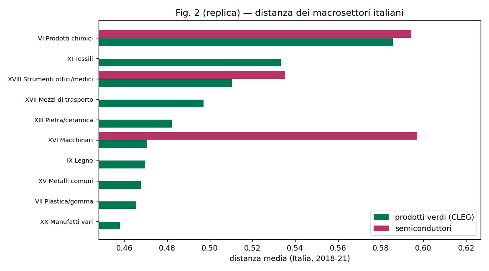
Figura 1: Distanza media dei macrosettori italiani dai prodotti verdi e dai semiconduttori (dati BACI-CEPII, 2018–2021).
Tre risultati emergono con chiarezza:
- i macchinari sono il comparto più vicino ai prodotti verdi (distanza media 0,47);
- i prodotti chimici sono il comparto più distante (0,59);
- i semiconduttori sono ovunque più lontani dei prodotti verdi, con uno scarto stabile di circa dieci centesimi.
La tabella seguente sintetizza le distanze medie per i comparti principali.
| Macrosettore | Distanza dai prodotti verdi | Distanza dai semiconduttori |
|---|---|---|
| Macchinari | 0,47 | 0,60 |
| Mezzi di trasporto | 0,50 | 0,59 |
| Metalli comuni | 0,50 | 0,59 |
| Prodotti chimici | 0,59 | 0,59 |
5 Dentro i sottoinsiemi: verdi e semiconduttori
Il rapporto non si ferma alle distanze medie: colloca ogni prodotto verde o semiconduttore in un quadrante definito da distanza e complessità, e individua le opportunità produttive — i prodotti ad alta complessità e bassa distanza che l’Italia non produce ancora con vantaggio comparato.
Per i prodotti verdi l’Italia ha un vantaggio comparato in 141 dei 246 codici considerati (57%) e la distanza media è contenuta (0,48). Le opportunità sono distribuite fra i quadranti.
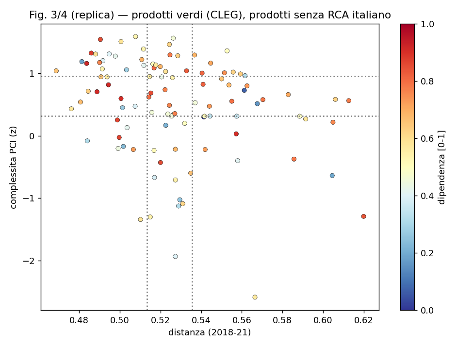
Figura 2: Prodotti verdi: distanza e complessità per l’Italia (quadranti).
Per i semiconduttori il quadro è opposto: la distanza media è la più alta fra i sottoinsiemi (0,59) e l’Italia ha un vantaggio comparato in solo 2 prodotti su 26.
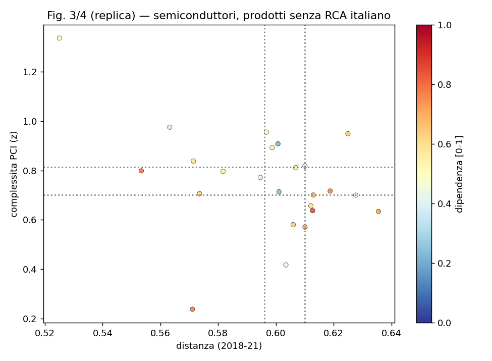
Figura 3: Semiconduttori: distanza e complessità per l’Italia (quadranti).
| Indicatore | Prodotti verdi | Semiconduttori |
|---|---|---|
| Prodotti nel sottoinsieme | 246 | 26 |
| Di cui con vantaggio comparato italiano | 141 (57%) | 2 (8%) |
| Distanza media | 0,48 | 0,59 |
| Complessità media (PCI, z) | 0,71 | 0,80 |
| Correlazione complessità–dipendenza (senza RCA) | +0,15 | −0,34 |
Sui prodotti verdi la relazione tra complessità e dipendenza commerciale è debole o assente, come nel rapporto. Sui semiconduttori il rapporto indica una relazione positiva — i prodotti più sofisticati sarebbero anche quelli da cui l’Italia dipende maggiormente. Nella replica questa relazione non si riproduce: la correlazione è negativa e non statisticamente distinta da zero. Il punto è discusso nella sezione sui risultati non riproducibili.
6 Filiera automotive e prodotti a duplice uso
Il terzo focus del rapporto riguarda la diversificazione della filiera automotive verso aerospazio, difesa e prodotti a duplice uso. La tesi è che questi comparti siano sovrarappresentati fra i prodotti “obiettivo” dell’automotive — i prodotti vicini alla filiera e ad alta complessità — con rapporti tra quote di export di 8,15 (aerospazio), 4,78 (difesa) e 4,37 (dual use).
Per la replica il perimetro dei tre settori va esteso lungo la filiera produttiva. A questo scopo si utilizza AIPNET, la rete di relazioni input-output tra prodotti stimata tramite intelligenza artificiale [14]. La rete conta oltre 416.000 legami tra prodotti HS12; partendo dai prodotti finali di ciascun settore e includendo gli input diretti, si ottengono 480 prodotti per l’aerospazio e 220 per la difesa, contro 15 e 21 prodotti finali. Per i prodotti a duplice uso si unisce la lista di priorità europea alla rete strategica del JRC [13], che identifica 97 codici a sei cifre di beni strategici di uso civile e militare.
| Settore | Rapporto del rapporto | Replica, soli prodotti finiti | Replica, filiera estesa e dual use |
|---|---|---|---|
| Aerospazio | 8,15 | 1,07 | 1,53 |
| Difesa | 4,78 | 0,60 | 1,76 |
| Dual use | 4,37 | 1,62 | 1,78 |
| Altro | 0,88 | 0,96 | 0,84 |
La direzione del messaggio è confermata: con il perimetro esteso i tre settori risultano sovrarappresentati fra i prodotti obiettivo (rapporto sopra 1) mentre la categoria residuale scende sotto l’unità. I livelli restano però lontani da quelli del rapporto. Poiché la filiera, la lista dual-use e la soglia di selezione sono ora sotto controllo, la differenza va attribuita alla definizione di distanza e di quadrante adottata dagli autori, non riproducibile senza il loro codice.
7 Robustezza e validazione esterna
I risultati sono stabili rispetto a tre variazioni: il periodo (2018–2021 o 2012–2021), l’universo dei paesi (mondo o Unione europea a 27 più Regno Unito) e la misura di complessità (indice PCI o indice di fitness). In tutte le combinazioni la distanza dai semiconduttori resta superiore a quella dai prodotti verdi e la quota di prodotti senza vantaggio comparato con dipendenza netta resta compresa tra il 74% e il 78%.
Una verifica più stringente viene da fonti esterne. La complessità dei paesi (ECI) replica quella dell’Observatory of Economic Complexity [15] e del Growth Lab di Harvard [16] con correlazioni di 0,99 e 0,97; il valore italiano è 1,30 contro 1,26 della fonte esterna. La complessità dei prodotti (PCI) replica quella di OEC con una correlazione di 0,89 su 4.308 prodotti comuni.
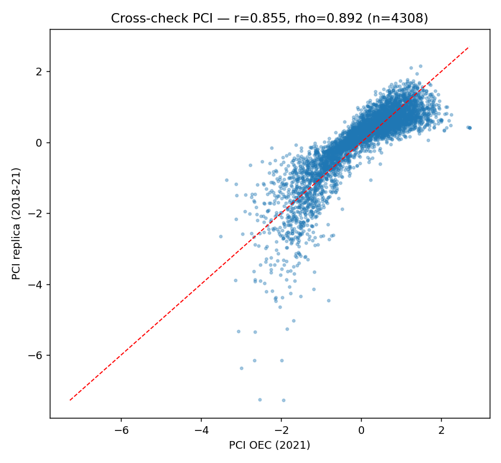
Figura 4: Confronto tra la complessità dei prodotti stimata nella replica e quella dell’Observatory of Economic Complexity (dati 2021).
| Confronto | Osservazioni | Correlazione di Pearson | Correlazione di Spearman |
|---|---|---|---|
| ECI paese, replica vs OEC | 131 paesi | 0,995 | 0,992 |
| ECI paese, replica vs Growth Lab | 144 paesi | 0,966 | 0,971 |
| PCI prodotto, replica vs OEC | 4.308 prodotti | 0,855 | 0,892 |
Il disallineamento sul PCI è concentrato nei prodotti esportati da pochi paesi, dove l’indice è intrinsecamente instabile: escludendo i prodotti a bassa ubiquità la correlazione sale a 0,92. La pipeline di calcolo è quindi validata dall’esterno; resta non verificabile in modo indipendente la sola matrice di prossimità, per la quale non esiste un riferimento pubblico comparabile.
8 Dalla fotografia alla dinamica
Il rapporto fotografa il posizionamento italiano nella finestra 2018–2021. La replica, mantenendo fissa la struttura mondiale delle prossimità, calcola la distanza dell’Italia anno per anno dal 2012 al 2021 e mostra una tendenza che la fotografia statica non coglie.
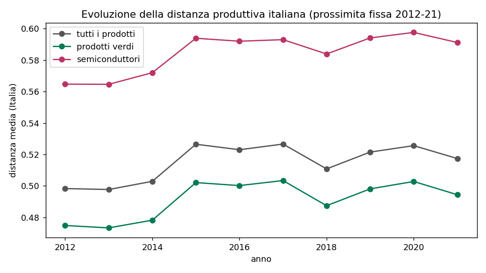
Figura 5: Evoluzione della distanza media dell’Italia dai prodotti complessi, verdi e della filiera dei semiconduttori (2012–2021).
| Anno | Distanza da tutti i prodotti | Distanza dai prodotti verdi | Distanza dai semiconduttori |
|---|---|---|---|
| 2012 | 0,498 | 0,475 | 0,565 |
| 2015 | 0,527 | 0,502 | 0,594 |
| 2018 | 0,511 | 0,487 | 0,584 |
| 2021 | 0,517 | 0,494 | 0,591 |
La distanza italiana dai prodotti complessi e strategici è cresciuta nel decennio, con un’allargamento concentrato negli anni 2014–2015 e un recupero parziale a partire dal 2018. In termini di specializzazioni, il paniere italiano ha perso terreno su prodotti più “centrali” di quanti ne abbia guadagnati. La finestra del rapporto coglie quindi un momento di parziale risalita dopo il punto di minima, non un miglioramento strutturale.
9 I tre risultati non riproducibili
Tre risultati del rapporto non emergono dalla replica con fonti pubbliche. In nessun caso si tratta di un errore: ciascuno dipende da materiali che gli autori non hanno pubblicato.
| Risultato del rapporto | Esito della replica | Spiegazione |
|---|---|---|
| Relazione positiva tra complessità e dipendenza sui semiconduttori | non riprodotta (correlazione negativa o nulla) | servirebbe la lista ufficiale dei prodotti; con 24 osservazioni la stima è instabile |
| Rapporti di sovrarappresentazione 8× e 5× nella tabella automotive | direzione confermata, livelli no | dipendono dalla definizione di distanza e di quadrante degli autori |
| Italia distante dai metalli di base | non riprodotta | i metalli risultano vicini anche con liste verdi ristrette |
Sul primo punto la replica è particolarmente cauta. La correlazione negativa osservata sui semiconduttori (−0,34 su 24 prodotti) ha un intervallo di confidenza che attraversa lo zero e un valore di significatività di 0,11: non è possibile affermare né una relazione positiva né una negativa. Anche restringendo l’analisi ai soli dispositivi e apparati di fabbricazione, o usando l’indice di complessità ufficiale dell’Observatory of Economic Complexity, il segno positivo non emerge. La conclusione corretta è che, con dati e liste pubbliche, la relazione sui semiconduttori non è identificabile.
10 Oltre il rapporto: opportunità verdi e confronto europeo
La replica produce anche risultati che il rapporto non contiene. Il primo è una lista nominale delle opportunità verdi per l’Italia: prodotti complessi, vicini alla struttura produttiva italiana e oggi importati, in cui il paese non ha ancora un vantaggio comparato. Un indice sintetico di opportunità, che combina complessità, vicinanza e dipendenza, individua due filoni ricorrenti: la strumentazione di misura e controllo e i materiali isolanti per l’edilizia.
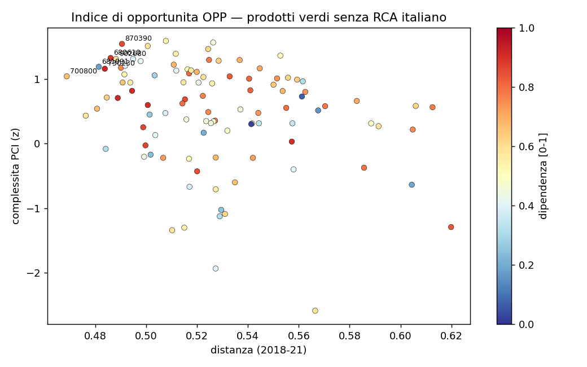
Figura 6: Indice di opportunità per i prodotti verdi senza vantaggio comparato italiano.
| Codice HS | Descrizione | Distanza | Complessità (z) | Dipendenza |
|---|---|---|---|---|
| 903033 | strumenti di misura di tensione e corrente | 0,50 | +1,51 | 0,58 |
| 903289 | strumenti automatici di regolazione e controllo | 0,51 | +1,39 | 0,53 |
| 902680 | strumenti di misura per liquidi e gas | 0,49 | +1,31 | 0,60 |
| 680610 | lane minerali isolanti | 0,49 | +1,32 | 0,88 |
| 700800 | vetrate isolanti multiparete | 0,47 | +1,04 | 0,66 |
| 701939 | feltri e materassini in fibra di vetro | 0,49 | +1,07 | 0,53 |
Il secondo risultato è un confronto europeo sul posizionamento rispetto alle due filiere strategiche. La Germania è il paese europeo più vicino ai semiconduttori, con una distanza di 0,52 e un vantaggio comparato in 8 prodotti su 26, contro una distanza di 0,59 e 2 prodotti su 26 dell’Italia. L’Italia è invece il paese più vicino ai prodotti verdi per distanza media, pur con meno specializzazioni della Germania.
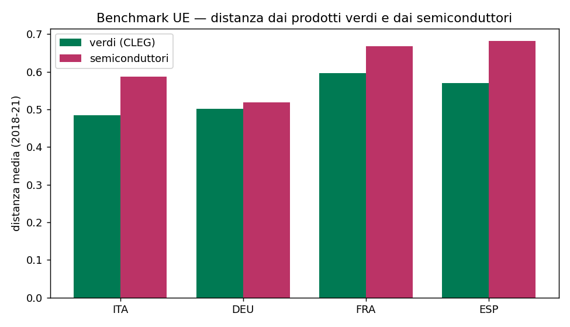
Figura 7: Distanza di Italia, Germania, Francia e Spagna dai prodotti verdi e dai semiconduttori.
| Paese | Distanza dai verdi | Distanza dai semiconduttori | Prodotti con RCA nei semiconduttori |
|---|---|---|---|
| Italia | 0,484 | 0,587 | 2 su 26 |
| Germania | 0,502 | 0,518 | 8 su 26 |
| Francia | 0,596 | 0,667 | 2 su 26 |
| Spagna | 0,570 | 0,681 | 0 su 26 |
Il messaggio europeo del rapporto — la necessità di cooperazione sui semiconduttori — trova qui un interlocutore concreto: sul fronte dei semiconduttori il partner naturale dell’Italia è la Germania.
11 L’impostazione è corretta? I limiti dell’approccio
Il metodo adottato dal rapporto, e replicato in questo documento, misura le opportunità di politica industriale a partire da ciò che un paese esporta. La scelta è solida per un indicatore di fattibilità: le capacità produttive non sono osservabili direttamente, e le esportazioni con vantaggio comparato le rivelano. La prossimità tra prodotti predice la diversificazione futura meglio di molte alternative [4], [17].
L’approccio ha tuttavia limiti noti, che vanno tenuti presenti nella lettura dei risultati.
| Limite | Effetto | Correzione possibile |
|---|---|---|
| Capacità diversa da capacità di esportare | chi assembla appare capace; chi produce per il mercato interno non appare | dati di produzione, valore aggiunto |
| Export lordi e non valore aggiunto | le catene globali gonfiano il ruolo dell’ultimo passaggio | conti del valore aggiunto nel commercio [18] |
| Co-esportazione diversa da relazione tecnica | due prodotti co-esportati condividono qualcosa, non necessariamente un legame input-output | tavole input-output [19], reti di filiera stimate [14] |
| Aggregazione a sei cifre | prodotti diversi finiscono nella stessa voce | analisi a granularità più fine |
| Prospettiva rivolta al passato | indica dove un paese è, non dove va il mercato | componenti di trend e di domanda futura |
| Fattibilità diversa da desiderabilità | la prossimità dice “si può”, non “conviene” | criteri di sicurezza e resilienza |
Il rapporto affianca correttamente tre lenti distinte — prossimità (fattibilità), complessità (valore) e dipendenza (vulnerabilità) — ma non separa sempre il piano descrittivo da quello prescrittivo: gli obiettivi strategici sono definiti dall’Unione europea e il metodo misura la fattibilità, non la desiderabilità. Resta inoltre assente la dimensione occupazionale e territoriale, che è invece centrale nel processo di riconversione dell’automotive.
12 Priorità endogene: una graduatoria costruita dal basso
Se si rinuncia a partire dagli elenchi europei, la domanda diventa: quali prodotti emergono come prioritari dalla sola struttura produttiva italiana? Per rispondere si costruisce un indice multi-criterio sui prodotti senza vantaggio comparato, che combina cinque dimensioni: fattibilità (bassa distanza), valore (alta complessità), domanda netta (importazioni meno esportazioni), autonomia (dipendenza) e concentrazione dell’origine. La stabilità della graduatoria è verificata su quattro schemi di pesi e con una componente principale.
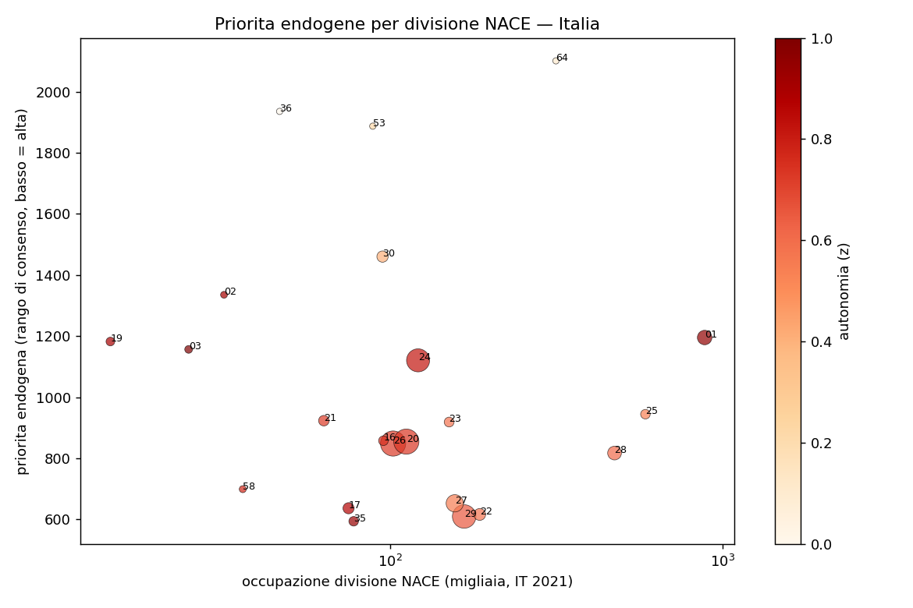
Figura 8: Priorità endogene per divisione NACE: posizione nella graduatoria e occupazione.
| Divisione NACE | Settore | Posizione | Occupazione (migliaia) | Commercio (mld €) |
|---|---|---|---|---|
| 29 | autoveicoli | 1 | 167 | 160 |
| 22 | gomma e plastica | 2 | 186 | 32 |
| 17 | carta e cartone | 3 | 75 | 27 |
| 27 | apparecchi elettrici | 4 | 157 | 81 |
| 32 | altre manifatture | 5 | n.d.¹ | 52 |
| 28 | macchinari | 6 | 473 | 47 |
¹ La divisione 32 è disponibile solo nel gruppo A64 C31_C32; l’occupazione di gruppo non è attribuita alle singole divisioni e va letta insieme alla 31.
Le priorità che emergono dal basso sono il comparto automobilistico e la componentistica, la gomma-plastica, la carta, l’elettrotecnica, le altre manifatture e la meccanica: il nucleo manifatturiero esistente, non la frontiera verde e digitale. I semiconduttori non compaiono, perché sono complessi ma lontani. Le prime posizioni non sono un numero unico: la graduatoria dipende dalla ponderazione dei criteri (gli schemi che privilegiano fattibilità e domanda sono coerenti tra loro, quello che privilegia l’autonomia diverge) e le divisioni con pochissimi prodotti — tabacco, coke — non sono classificabili. Il metodo principale è un Borda (media pesata del rango di priorità dei prodotti); la variante che costruisce il rango settoriale dopo l’aggregazione dà una graduatoria quasi identica (ρ = 0,93).
13 Applicazioni: dipendenze critiche, export verde e incentivi
13.1 Vulnerabilità alle dipendenze critiche
Per ogni prodotto si calcolano l’indice di dipendenza commerciale e la concentrazione dell’origine delle importazioni. Aggregando per comparto emergono le esposizioni maggiori.
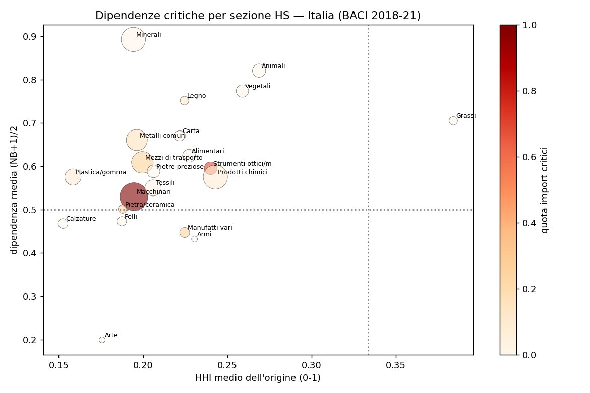
Figura 9: Dipendenza e concentrazione dell’origine per sezione merceologica (Italia, 2018–2021).
| Sezione | Importazioni (mld €, 4 anni) | Dipendenza media | Concentrazione origine | Prodotto più esposto |
|---|---|---|---|---|
| Macchinari | 351 | 0,53 | 0,20 | apparecchi di rete (851762), Cina 29% |
| Mezzi di trasporto | 205 | 0,61 | 0,20 | autoveicoli, Germania 18% |
| Strumenti ottici e medici | 61 | 0,60 | 0,24 | strumenti di misura |
| Metalli comuni | 193 | 0,66 | 0,20 | prodotti in metallo |
| Prodotti chimici | 260 | 0,57 | 0,24 | specialità chimiche |
La concentrazione dell’origine è moderata (tra 0,16 e 0,24): il rischio prevalente è di dipendenza netta, più che di monopolio di un singolo fornitore, con l’eccezione degli apparecchi di rete, dove la Cina pesa per il 29%. I semiconduttori incidono poco in valore ma presentano il vantaggio comparato italiano più basso, a conferma di una vulnerabilità strategica più che di bilancio aggregato.
13.2 Opportunità verdi e mercato contendibile
Sui prodotti verdi individuati come opportunità si stima il mercato contendibile come importazione netta, cioè il valore oggi importato che potrebbe essere sostituito da produzione interna.
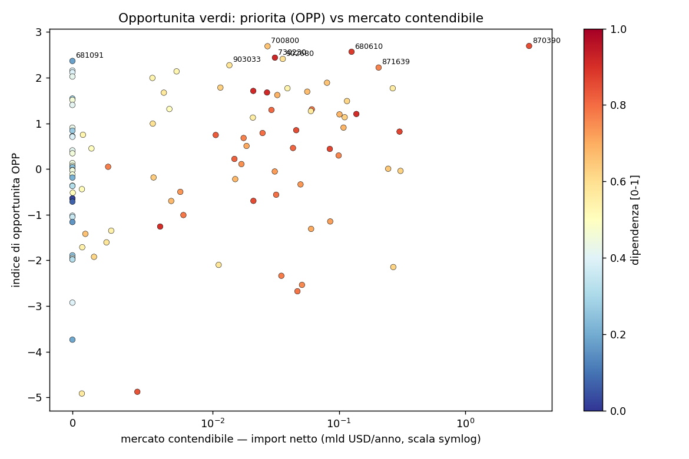
Figura 10: Priorità tecnologica e mercato contendibile per i prodotti verdi opportunità.
| Codice HS | Descrizione | Priorità (OPP) | Importazione netta (mld €/anno) |
|---|---|---|---|
| 700800 | vetrate isolanti multiparete | 2,69 | 0,03 |
| 680610 | lane minerali isolanti | 2,57 | 0,13 |
| 730230 | materiale ferroviario (scambi) | 2,44 | 0,03 |
| 902680 | strumenti di misura per liquidi e gas | 2,41 | 0,04 |
| 681091 | prefabbricati in cemento | 2,37 | 0,02 |
Le opportunità verdi, al netto della voce automobilistica che il sostituto verde include in modo improprio, hanno mercati netti contenuti — decine o centinaia di milioni di euro l’anno — ma alta priorità tecnologica. Sono mercati di nicchia strategica, da finanziare per progetto più che per volume.
13.3 Incentivi e aiuti di Stato
La domanda finale è quali strumenti pubblici sostengano le priorità individuate. Il Registro Nazionale degli Aiuti di Stato consente di misurare dove gli aiuti sono effettivamente andati [20]. Nel periodo 2015–2026 risultano registrate circa 25,9 milioni di concessioni per 4,97 milioni di beneficiari, per un importo di aiuto concesso di 559,6 miliardi di euro. Il campo AIUTO misura l’elemento di aiuto nella registrazione, non l’importo erogato, e il 2026 è parziale.
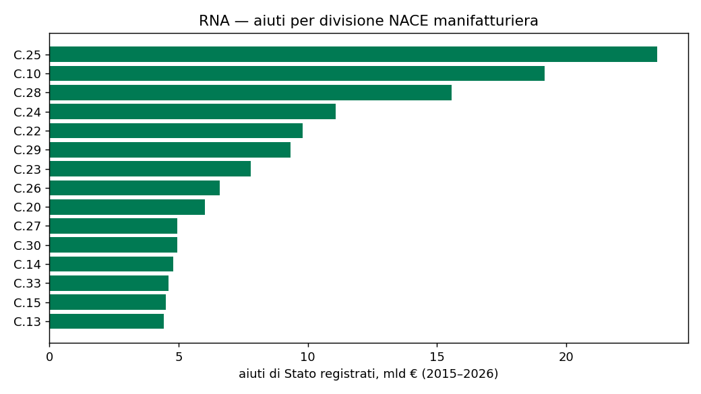
Figura 11: Aiuti di Stato registrati per divisione manifatturiera (2015–2026).
| Divisione NACE | Settore | Aiuti (mld €) |
|---|---|---|
| 25 | prodotti in metallo | 23,5 |
| 28 | macchinari | 15,6 |
| 24 | metallurgia | 11,1 |
| 22 | gomma e plastica | 9,8 |
| 29 | autoveicoli | 9,3 |
| 26 | computer, elettronica e ottica | 6,6 |
| 20 | chimica | 6,0 |
| 30 | altri mezzi di trasporto (aerospazio) | 5,0 |
| 21 | farmaceutica | 1,8 |
Gli aiuti effettivi si concentrano su meccanica, metalli e materiali — le stesse divisioni che emergono come priorità endogene — per lo più attraverso strumenti orizzontali come i crediti d’imposta e il fondo di garanzia. La frontiera strategica pesa meno: la microelettronica riceve 0,54 miliardi nel 2025, l’idrogeno 1,8 miliardi in tutto il periodo.
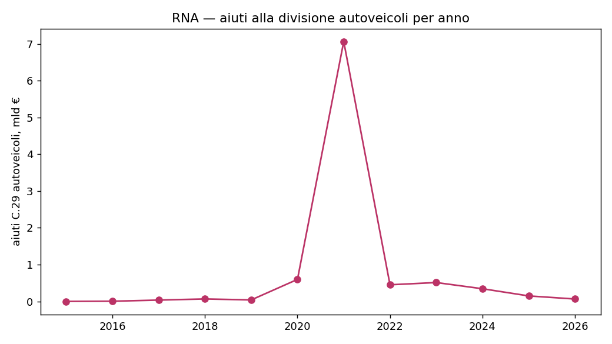
Figura 12: Aiuti alla divisione autoveicoli per anno (2015–2026).
Il comparto automobilistico mostra un sostegno concentrato nel tempo — un picco di 7,1 miliardi nel 2021, seguito da valori intorno a 0,3–0,5 miliardi l’anno — e nello spazio: il 91% dell’importo concesso va al Centro-Nord (8,5 miliardi contro 0,8 al Mezzogiorno, al netto delle regioni non classificate). Il quadro degli incentivi conferma il divario segnalato nella sezione sulle priorità: chi ha competenze trasferibili verso i settori target dispone soprattutto di strumenti generali, mentre i programmi dedicati si concentrano sulla frontiera tecnologica.
14 Conclusioni
La replica conferma il nucleo del LEAP Policy Brief 6/2026. L’Italia è relativamente vicina alle tecnologie della transizione verde, in particolare nella meccanica e nella strumentazione, ed è strutturalmente distante e quasi assente dai semiconduttori, dove il vantaggio comparato riguarda due prodotti su ventisei e la Germania è il partner europeo più prossimo. Le dipendenze commerciali sono diffuse nei segmenti dove il paese non ha vantaggio comparato.
Il metodo è solido e i risultati qualitativi sono robusti a periodo, universo dei paesi e misura di complessità, oltre che validati da fonti indipendenti. Tre risultati del rapporto non sono riproducibili con materiali pubblici — la relazione tra complessità e dipendenza sui semiconduttori, i livelli della tabella automotive e la posizione sui metalli di base — e in nessun caso ciò costituisce un errore degli autori.
La replica aggiunge tre elementi al quadro. Primo, la dinamica: la distanza italiana dai prodotti complessi e strategici è cresciuta nel decennio 2012–2021, e la finestra del rapporto coglie un rimbalzo, non un miglioramento strutturale. Secondo, la direzione: applicando il metodo ai dati italiani senza filtri europei, le priorità che emergono dal basso sono il comparto automobilistico e la componentistica, la meccanica, i materiali e la chimica specializzata — lo stesso nucleo che riceve la maggior parte degli aiuti di Stato. Terzo, il divario di strumenti: i settori che definiscono la frontiera strategica europea dispongono di programmi dedicati, mentre le priorità endogene, pur essendo quelle a maggiore fattibilità, sono sostenute soprattutto da strumenti orizzontali.
Nota metodologica
Questo documento nasce dall’interazione di tre componenti. L’autore definisce le domande, esercita il giudizio critico e assume la responsabilità scientifica ed editoriale del risultato. Strumenti di intelligenza artificiale generativa sono impiegati a supporto della ricerca bibliografica, della lettura, della sintesi, della riorganizzazione argomentativa e della revisione del testo. Un’infrastruttura open source sviluppata dall’autore automatizza il reperimento, l’armonizzazione e il controllo dei dati dalle fonti statistiche ufficiali, e mantiene l’elaborazione documentata e riproducibile.
Le fonti sono pubblicamente accessibili e citate con la loro denominazione ufficiale; l’analisi è pertanto integralmente auditabile e replicabile da terzi a partire da esse. Le tabelle e i grafici sono elaborazioni dell’autore: calcoli, aggregazioni, trasformazioni e scelte di rappresentazione sono attribuibili all’autore e non agli enti produttori dei dati.
La responsabilità per le fonti utilizzate, le analisi condotte, le elaborazioni effettuate, le interpretazioni proposte e le conclusioni formulate resta interamente in capo all’autore. L’intelligenza artificiale è stata impiegata come ambiente di supporto cognitivo ed editoriale, non come fonte primaria, autore autonomo o sostituto del giudizio critico.
14.1 Referenze
BACI_HS12_V202501.zip (1,16 GB, HS12 rev. 2012, anni 2012–2024), 2025. Disponibile su: https://www.cepii.fr/CEPII/en/bdd_modele/bdd_modele_item.asp?id=37
STRATEGIC_TRADE_ATLAS_DATA_<anno>.csv (annuale), 2026. Disponibile su: https://cidportal.jrc.ec.europa.eu/ftp/jrc-opendata/STRATEGIC-TRADE-ATLAS/
complexity_pci_a_hs12_hs6 / complexity_eci_a_hs12_hs6, 2025. Disponibile su: https://oec.world
doi:10.7910/DVN/XTAQMC (complexity rankings), doi:10.7910/DVN/YAVJDF (trade HS12), doi:10.7910/DVN/FCDZBN (product space networks), 2024. Disponibile su: https://atlas.hks.harvard.edu/data
OpenData_Aiuti_*.parquet), aggiornamento continuo, 2026. Disponibile su: https://www.rna.gov.it/